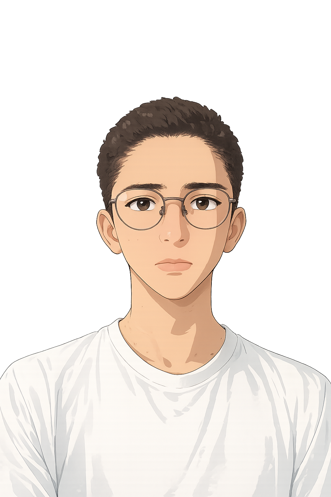

Certificações
arrow_back
arrow_forward
Olá, sou o Ruan!
Meu nome é Ruan Amorim, desenvolvedor web e entusiasta da ciência. Explore o site para conhecer meus projetos, habilidades e experiências.
Meu nome é Ruan Amorim de Mendonça. Sou desenvolvedor e designer web, com foco em front-end e criação de interfaces modernas e funcionais.
Sempre fui apaixonado por ciência e, ao longo dos anos, desenvolvi meus conhecimentos de forma autodidata. Atualmente, busco me especializar em uma área científica mais aprofundada, como física ou geofísica, onde possa integrar minha base em progamação para resolver problemas complexos e desenvolver soluções inovadoras.

AVANÇAR
Site informativo sobre animes, incluindo dados como estúdios, personagens e informações de produção.
O projeto foi desenvolvido com foco em estilização visual diferenciada (daí o nome “Stylish Anime”), priorizando design e experiência visual. Os dados foram inseridos manualmente, já que a integração com APIs não foi utilizada devido à inconsistência ou limitação de informações estruturadas.
Player de música web desenvolvido com foco em design responsivo e adaptabilidade para diferentes dispositivos, como celulares, notebooks e desktops.
O projeto foi construído como estudo de interface e responsividade, explorando layout e experiência de usuário em diferentes tamanhos de tela.
Projeto curto com foco em design visual, apresentando alguns lugares do Japão em uma interface estilizada.
O objetivo foi explorar estética, composição visual e estrutura básica de páginas temáticas.
Projeto de jogo simples de clique em círculos. Os alvos aparecem de forma aleatória na tela e possuem um sistema de auto-remoção ativado ao serem clicados, o que também gera automaticamente um novo círculo.
O jogo conta com diferentes modos de dificuldade, incluindo um modo em que os círculos surgem continuamente a cada segundo, exigindo que o jogador evite o acúmulo — caso contrário, perde a partida. Cada clique bem-sucedido vale um ponto.
Além disso, o projeto permite personalização, incluindo alteração de background, estilo dos círculos e trilha sonora.
Calculadora financeira que estima o valor justo de ações com base em dados como capital líquido, lucro líquido, preço da ação e outros indicadores.
A ferramenta realiza uma análise comparativa e retorna um resultado indicando se a ação está “cara” ou “barata”, além da diferença percentual entre valor estimado e valor de mercado.
> design não foi o foco principal deste projeto, já que o objetivo era validar a lógica de cálculo e análise financeira. Trata-se de uma ferramenta de apoio, não de decisão absoluta.